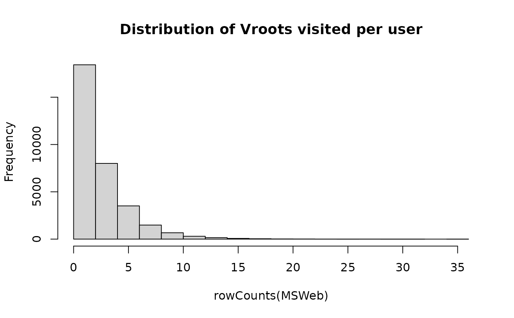

Anonymous web data from www.microsoft.com
MSWeb.RdVroots visited by users in a one week timeframe.
Usage
data(MSWeb)Details
The data was created by sampling and processing the www.microsoft.com logs. The data records the use of www.microsoft.com by 38000 anonymous, randomly-selected users. For each user, the data lists all the areas of the web site (Vroots) that user visited in a one week timeframe in February 1998.
This dataset contains 32710 valid users and 285 Vroots.
Source
Asuncion, A., Newman, D.J. (2007). UCI Machine Learning Repository, Irvine, CA: University of California, School of Information and Computer Science. https://archive.ics.uci.edu/
References
J. Breese, D. Heckerman., C. Kadie (1998). Empirical Analysis of Predictive Algorithms for Collaborative Filtering, Proceedings of the Fourteenth Conference on Uncertainty in Artificial Intelligence, Madison, WI.
Examples
data(MSWeb)
MSWeb
#> 32710 x 285 rating matrix of class ‘binaryRatingMatrix’ with 98653 ratings.
nratings(MSWeb)
#> [1] 98653
## look at first two users
as(MSWeb[1:2,], "list")
#> $`1`
#> [1] "regwiz" "Support Desktop" "End User Produced View"
#>
#> $`2`
#> [1] "Support Desktop" "Knowledge Base"
#>
## items per user
hist(rowCounts(MSWeb), main="Distribution of Vroots visited per user")
